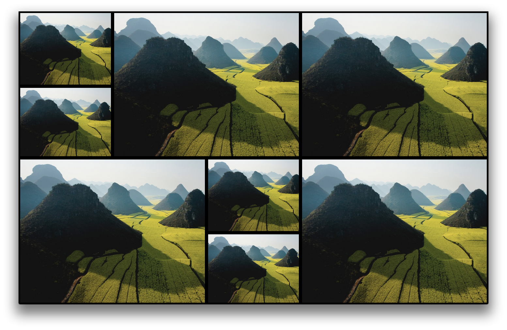

Why
The screensavers available on Mac OS X Mountain Lion are so beautifull, they shouldn't be for Mac users only. When developing a system for a tv in a public room, I decided to display the photographs in this fashion. To share this with the world I made it available for contribution and usage on Github. To make this some sort of achievement I tried to use as much CSS3 and as less jQuery stuff as possible, therefore showing the capabilities of CSS3 and HTML5.
How it looks:

The Animations
Single box:
Duo box:
Authors and Contributors
This version of Shifting Tiles was forked from @hermanbanken, inpired by Apple and enpowered by HTML5 and CSS3.